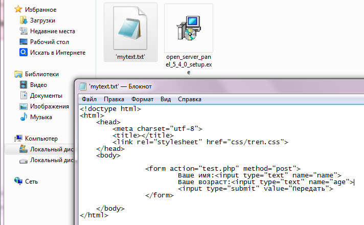

Функция для посыла заголовка ответа это header(). В видео Уровень 2 день 1 это можно посмотреть с 01:12:20
Заголовок Location переадресует пользователя на другой ресурс. Когда мы делаем запрос на сервер, то вместе с заголовком Location приходит и статус кода 302. Например у нас на сайте есть форма в которой есть список select:
<select name="url">
<option value="https://www.google.com">Гугл</option>
<option value="https://www.yandex.ru">Яндекс</option>
<option value="https://www.vk.com">ВК</option>
</select>
Пользователь выбирает пункт и отправляет форму, данные формы приходят на файл обработчик, в файле код получает url и посылает браузеру заголовок Location с этим адресом:
$url = strip_tags($_GET["url"]);
if($url){
header("Location : $url");
exit;
}
И браузер послушно переходит на присланный адрес. Конструкция exit нужна для того, чтобы php не исполнял дальше код, так как уже в нём нет необходимости, так как заголовок улетел и браузер уже не получит дальнейший результат кода.
Ещё один полезный способ использование этого заголовка. Например есть на странице форма, мы её заполняем и отправляем данные методом POST и хотим обновить страницу, а обновление страницы это повторное послание последнего запроса. И если ннажать обновить, то появится предупреждение о повторной отправке формы, а это повторная перезапись данных в базу данных или ещё что то. Чтобы не отправлялась повторно форма, то в обработчике после всех действий с данными посылаем Location браузеру, чтобы он без нашего участия обновил страницу методом GET:
//пришли данные методом post, мы их обработали и посылаем браузеру заголовок Location
header("Location: " . $_SERVER["PHP_SELF"]);
После прихода ответа от сервера сделались все свои дела, установились там куки например и браузер должен обновить страницу, то есть сделать запрос на ту страницу на которой и находимся, но уже методом get и уже получается что последний запрос это запрос методом get, значит получается мы отправили данные методом post запрос обработался и пришёл ответ, браузер обновил страницу автоматом и теперь если мы захотим сами вручную обновить страницу, то будет выполняться последний запрос методом get, а значит повторно уже форма отправлятся не будет.
Как перенаправить пользователя на новый адрес сайта. Есть 2 способа, первый это как показано на картинке отправить 2 заголовка или послать послать один заголовок, но с дополнительными аргументами. Если мы переадресуем пользователя на другой сайт, то надо вернуть браузеру статус 301 и адрес, куда надо перейти.
Refresh - этот заголовок заставляет браузер перезагружать страницу на которой находится, время через которое надо перезапустить указанны в его значении. Если через ; указать url адрес, то через указаное время перейти на этот адрес.
Когда браузер запрашивает страницу, то он не знает что там придёт, сервер для этого посылает заголовок Content-Type с указанием, какой он прислал формат данных. Часто можно увидеть там такое значение:
Content-Type: text/html; charset=UTF-8
Это значит что пришёл формат данных - HTML в кодировке utf-8.
Когда мы делаем запрос на сервер, то он нам возвращает страницу-файл в виде байтов и браузер по умолчанию их выводит на экран, но мы можем сказать браузеру, чтобы он нам записал эти байты в какой то файл и дал скачать. Как это сделать? Для этого есть такие заголовки:
header("Content-Type: file/octet-stream");
header("Content-Disposition: attachment; filename='mytext.txt'");
Если написать эти заголовки в начале какой нибудь html страницы и запросить эту страницу, то автоматом будет создан файл mytext.txt, куда запишутся все байты этой страницы и автоматом будет скачан ко мне на комп в папку Загрузки(ну это у меня так):
Мы также можем скачивать файлы и в формате rtf, это формат для word документов, подробнее расскажет специалист c01:54:00
Рассказывает с 01:54:00
З ауправление кешированием отвечают следующие заголовки:
//запрет кеширования
header("Cache-Control: no-cache, max-age=0");
//полный запрет кеширования
header("Cache-Control: no-store");
//разрешение кеширование на 1 час относительно времени запроса
header("Cache-Control: max-age=3600");
//разрешение кеширования на 1 час
header("Expires: " . date("r", time() + 3600));
02:19:01
Буферизация нужна для того чтобы не было ошибок, когда мы посылаем заголовки после вывода типа echo. Пока не буду описывать эти функции буферизации, если понадобится, вернусь к видео, время указано в начале.